전자산업기사 (2018-03-04 기출문제)
1과목: 전자회로
1. 다음 회로의 동작으로 옳은 것은?
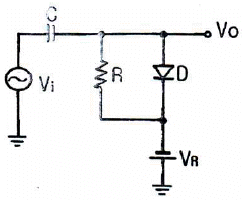
- 정(+)방향 피크를 기준 레벨 VR로 클램프한다.
- 부(-)방향 피크를 기준 레벨 VR에 클램프한다.
- 출력은 2VR이다.
- 출력은 Vi이다.
(정답률: 78%)

2. IC 연산증폭기의 입력단으로 사용되는 증폭기는?
- 차동 증폭기
- 전압 증폭기
- 전류 증폭기
- 전력 증폭기
(정답률: 85%)
3. 반전 증폭기의 출력전압 VO는? (단, R1 = 20KΩ, R2 = 10KΩ, Vi = 5V이다.)
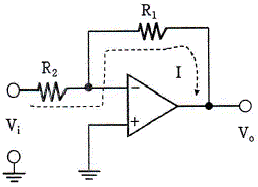
- 2.5V
- -2.5V
- 10V
- -10V
(정답률: 65%)
4. 다중 회선을 구성할 때 시분할 방식으로 하려면 어떤 변조 방식이 가장 적절한가?
- PWM
- AM
- 펄스 변조
- PM
(정답률: 82%)
5. 연산증폭기에 계단파 입력전압이 인가되었을 때 시간에 따른 출력전압의 변화율을 나타내는 것은?
- 전류 드리프트
- 슬루레이트
- 동상신호제거비
- 출력 오프셋 전압
(정답률: 83%)
6. 전파브리지 정류기의 다이오드 하나가 개방(Open)될 때 출력전압은 어떻게 변화되는가?
- 0V
- 반파 전압
- 입력전압의 10배
- 입력전압의 2배
(정답률: 75%)
7. 펄스 변조 방식 중에서 아날로그 변조가 아닌것은?
- 펄스 진폭 변조(PAM)
- 펄스 부호 변조(PCM)
- 펄스 위상 변조(PPM)
- 펄스 폭 변조(PWM)
(정답률: 73%)
8. 전류 귀환 증폭기의 출력 임피던스는 귀환이 없을 때와 비교하면 어떠한가?
- 감소한다.
- 증가한다.
- 변화가 없다.
- 증가 또는 감소할 수 있다.
(정답률: 65%)
9. 그림의 PCM 회로 구성에서 들어갈 회로를 올바르게 나열한 것은?
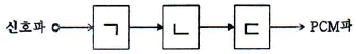
- ㄱ: 표본화 회로, ㄴ: 양자화 회로, ㄷ: 부호화 회로
- ㄱ: 표본화 회로, ㄴ: 부호화 회로, ㄷ: 양자화 회로
- ㄱ: 부호화 회로, ㄴ: 양자화 회로, ㄷ: 표본화 회로
- ㄱ: 양자화 회로, ㄴ: 표본화 회로, ㄷ: 부호화 회로
(정답률: 88%)
10. 전류-전압 관계가
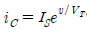
인 소자의 전달컨덕턴스(Transconductance) gm은?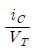
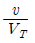
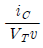
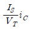
(정답률: 63%)
11. 단상 반파 정류 회로에서 순저항 부하에 걸리는 직류 전압의 크기가 200V일 때, 다이오드에 걸리는 최대 역전압의 크기는 약 몇 V 인가?
- 628
- 314
- 141.4
- 565.7
(정답률: 58%)
12. 이미터 접지증폭기에 이미터 저항을 연결했을 경우 나타나는 결과에 관한 설명으로 틀린것은?
- 입력저항이 증가한다.
- 주파수 특성이 개선된다.
- 안정도가 좋아진다.
- 전압이득이 증가한다.
(정답률: 63%)
13. 다음 등가회로가 나타내는 소자는?
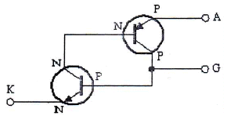
- SSS
- SUS
- SCR
- SCS
(정답률: 85%)
14. 부귀환 증폭기의 일반적인 특징으로 틀린 것은?
- 잡음이 감소한다.
- 대역폭이 증가한다.
- 안정도가 증가한다.
- 일그러짐이 증가한다.
(정답률: 80%)
15. 입력의 반주기(180°) 동안은 직선 영역에서 동작하고 나머지 반주기 동안은 차단영역에서 동작하는 증폭기는?
- A급
- B급
- C급
- D급
(정답률: 82%)
16. FET에서 VGS = 0.7V로 일정하게 하고 VDS를 5V에서 10V로 변화시켰을 때, ID가 10mA에서 15mA로 변화하였다면 드레인-소스 저항(rd)은 몇 KΩ 인가?
- 1
- 5
- 10
- 50
(정답률: 55%)
17. A급 전력증폭기의 특징에 관한 설명 중 틀린것은?
- 입력신호 전주기(0~360°)에서 동작한다.
- 활성영역에서 동작한다.
- 효율은
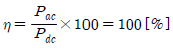
이다. - 완충 증폭기로 이용한다.
(정답률: 78%)
18. 회로에서 저항 RO 양단의 출력전압은 몇 V인가?
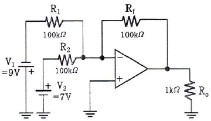
- 1
- 2
- 3
- 4
(정답률: 75%)
19. 정전압 장치의 출력전압은 몇 V 인가?
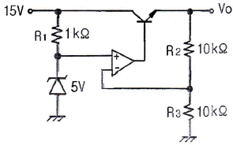
- 5
- 7.5
- 10
- 30
(정답률: 62%)
20. n-채널 JFET의 IDSS = 16mA, VP=-4V, VGS = -2V일 때 gm은 몇 S 인가?
- 1
- 2
- 3
- 4
(정답률: 60%)
2과목: 전기자기학 및 회로이론
21. 다음 물질 중 비유전율이 가장 큰 것은?
- 물
- 수소
- 고무
- 운모
(정답률: 77%)
22. 두 개의 무한히 긴 직선도체를 거리 r(m)간격으로 평행하게 놓고, 각각에 I1, I2의 전류를 흘렸을 때 단위 길이당 작용하는 힘(N/m)은 어떻게 표현되는가?
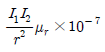
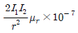
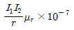
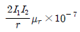
(정답률: 50%)
23. 비유전율 εs=3인 유전체 중에 Q1 = Q2 = 2×10-6C의 두 점전하간에 작용하는 힘 F가 3×10-3 N이 되도록 하려면 두 점전하는 몇 m 떨어져 있어야 하는가?
- 1
- 2
- 3
- 4
(정답률: 58%)
24. 압전기 현상에서 분극과 응력이 동일 방향으로 발생하는 현상은?
- 횡효과
- 종효과
- 역효과
- 간접효과
(정답률: 65%)
25. 자유공간을 통과하는 전자파의 전파속도 v는? (단, εo: 자유공간의 유전율, μo: 자유공간의 투자율이다.)
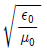
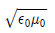
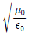
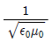
(정답률: 68%)
26. 환상철심에 권수 20회의 A코일과 권수 80회의 B코일이 있을 때 A코일의 자기 인덕턴스가 5mH라면 두 코일의 상호 인덕턴스는 몇 mH인가?
- 20
- 40
- 60
- 80
(정답률: 57%)
27. 권수가 200회이고, 자기 인덕턴스가 20mH인 코일에 2A의 전류를 흘릴 때 자속은 몇 Wb인가? (단, 누설자속은 없는 것으로 한다.)
- 2×10-2
- 4×10-2
- 2×10-4
- 4×10-4
(정답률: 58%)
28. 공기 중에서 반지름 a(m)의 도체구에 Q(C)의 전하를 주었을 때 전위가 V(V)로 되었다. 이 도체구가 갖는 에너지(J)은?
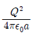
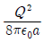
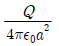
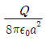
(정답률: 50%)
29. 길이 20cm, 단면의 반지름 10cm인 원통이 길이의 방향으로 균일하게 자화되어 자화의 세기가 200Wb/m2인 경우, 원통 양 단자에서의 전 자극의 세기는 몇 Wb 인가?
- π
- 2π
- 3π
- 4π
(정답률: 57%)
30. 주파수가 1MHz인 전자파의 파장은 공기 중에서 몇 m 인가?
- 100
- 200
- 300
- 400
(정답률: 67%)
31. e=200√2 sin wt+100√2sin wt[V]인 전압을 RL 직렬회로에 가할 때 제 3고조파 전류의 실효값은 몇 A 인가? (단, R=8Ω, ωL=2Ω이다.)
- 10
- 14
- 20
- 28
(정답률: 35%)
32. RLC 직렬 회로에서 저항의 값이 어떤 조건을 가질 때 진동하는가? (단, t=0인 순간에 스위치를 닫아 정현파 교류기전력 e=Emsin(ωt+θ)를 인가한 경우라 가정한다.)
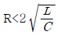
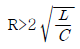
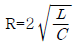
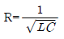
(정답률: 48%)
33. 다음 필터에 관한 설명 중 틀린 것은?
- 저역통과 회로는 높은 주파수를 잘 통과시키는 회로이다.
- 고역통과 회로는 낮은 주파수를 잘 통과시키지 않는 회로이다.
- 대역통과 회로는 대역에 해당하는 주파수만 통과시키는 회로이다.
- 대역저지 회로는 대역에 해당되는 주파수를 통과시키지 않는 회로이다.
(정답률: 75%)
34. 다음 파형을 단위계단 함수로 표시할 때 S(t) 는?
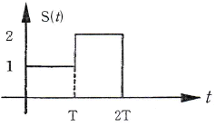
- u(t)+u(t-T)-2u(t-2T)
- u(t)+u(t-T)+2u(t-2T)
- u(t)+u(t-T)-2u(t+2T)
- u(t)+u(t+T)+2u(t+2T)
(정답률: 64%)
35. 인덕턴스 L1=L2=10mH이고, 상호 인덕턴스 M이 5mH일 때 결합계수(k)는?
- 0.1
- 0.2
- 0.3
- 0.5
(정답률: 64%)
36. 그림과 같은 회로망 그래프에서 컷 세트(cut-set)를 나타내는 것은?
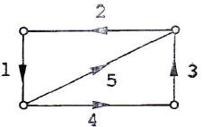
- {1,2,3}
- {1,4,5}
- {1,3,4}
- {1,2,3,4}
(정답률: 68%)
37. 다음의 회로가 정저항 회로가 되기 위한 L의 값은 몇 mH 인가? (단, R=1kΩ, C=0.1μF이다.)
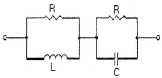
- 10
- 40
- 100
- 150
(정답률: 62%)
38. 감쇄지수 함수 Ae-atsinωt의 라플라스 변환을 옳게 나타내는 것은?
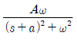
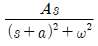
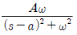
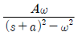
(정답률: 52%)
39. 권선비가 1인 이상적인 트랜스포머의 권선이 코어 주위에 반대방향으로 감겨 있으면 2차 전압은?
- 1차 전압과 동위상이다.
- 1차 전압과 역위상이다.
- 1차 전압보다 크다.
- 1차 전압보다 작다.
(정답률: 73%)
40. 4단자망의 파라미터 A,B,C,D의 내용으로 옳은 것은?
- A: 전압비, B: 임피던스 차원, C: 어드미턴스 차원, D: 전류비
- A: 전류비, B: 임피던스 차원, C: 어드미턴스 차원, D: 전압비
- A: 전압비, B: 어드미턴스 차원, C: 임피던스 차원, D: 전류비
- A: 전류비, B: 어드미턴스 차원, C: 임피던스 차원, D: 전압비
(정답률: 74%)
3과목: 전자계산기일반
41. Programmed I/O에 사용되는 핸드셰이킹(hand shaking) 비트이며, 입력으로 전송할 준비가 된 데이터 또는 출력에서 수신할 준비가 된 데이터를 가진 주변장치를 가리키는 것은?
- status bit
- start bit
- interrupt bit
- vector bit
(정답률: 71%)
42. 자료가 기억된 장소에 직접 사상(Mapping)시킬 수 있는 주소는?
- 직접 주소
- 간접 주소
- 계산에 의한 주소
- 자료 자신
(정답률: 81%)
43. 정수의 표현이 크기에 제한받는 가장 큰 이유는?
- 기계어(WORD, BYTE)의 크기나 수
- 기억용량
- 기억 장치의 질
- CPU 클럭
(정답률: 73%)
44. 컴퓨터 연산에서 보수(Complement)를 사용하는 목적으로 가장 적합한 것은?
- 가산기를 이용하여 감산을 수행하기 위하여
- 연산 속도를 줄이기 위하여
- 저장공간의 확보를 위하여
- 논리 연산의 게이트 수를 줄이기 위하여
(정답률: 76%)
45. 캐시 메모리(Cache Memory)의 설명으로 가장 옳은 것은?
- CPU의 속도와 기억장치의 속도 차를 늘이기 위한 기억장치이다.
- 캐시의 성능을 나타내는 척도를 적중률(hit ratio)이라 한다.
- 주로 DRAM으로 구성되어 있다.
- CPU와 보조기억장치의 정보교환을 위해 데이터를 임시 보관한다.
(정답률: 67%)
46. 인터럽트를 발생하는 장치들을 직렬로 연결하는 하드웨어적인 우선순위 제어 방식은?
- interface
- encoder
- daisy chain
- polling
(정답률: 69%)
47. 프로그램 카운터(program counter)는 다음에 실행해야 할 프로그램 명령의 어떤 것을 유지하는가?
- 클록(Clock)
- 주소(Address)
- 동작(Operation)
- 상태(Status)
(정답률: 67%)
48. 하나의 입력 신호를 받아서 수많은 데이터 출력선 중 하나를 선택하는 장치는?
- Demultiplexer
- Debugger
- Flip-flop
- Accumulator
(정답률: 76%)
49. 32비트 컴퓨터에서 어떤 메모리의 용량이 16kilo×32의 용량을 가지고 있다. 이 메모리가 가질 수 있는 최대 주소 입력 선의 개수는?
- 14
- 32
- 64
- 512
(정답률: 48%)
50. 컴퓨터를 명령어집합의 복잡성에 따라 RISC와 CISC로 구분할 때 CISC 컴퓨터의 특징이 아닌것은?
- RISC에 비해 명령어 수가 많다.
- RISC에 비해 주소지정방식이 다양하다.
- 명령어 형식은 모두 같은 길이를 갖는다.
- 대부분의 명령어는 직접적으로 기억장치에 접근(Access)을 할 수 있다.
(정답률: 72%)
51. 8비트에 BCD 코드 2개의 숫자를 표현하는 방법으로 기억장치의 공간 이용도를 높일 수 있어 주로 10진수 연산에 사용되는 것은?
- 부동 소수점 형식
- 팩 10진수 형식
- 언팩 2진수 형식
- 8진 데이터 형식
(정답률: 76%)
52. 불 함수
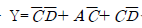
를 가장 간략화한 결과로 옳은 것은?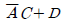
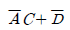
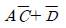
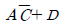
(정답률: 79%)
53. 다음 중 두 문자의 비교에 가장 적합한 논리 연산은?
- AND
- OR
- NOT
- EX-OR
(정답률: 69%)
54. 개인용 컴퓨터(PC)를 구성 및 운용하는데 반드시 필요한 장치가 아닌 것은?
- CPU
- RAM
- HDD
- Plotter
(정답률: 78%)
55. 기억장치 접근 방식의 분류에서 DASD 방식이 아닌 것은?
- FDD
- HDD
- SSD
- Magnetic Tape
(정답률: 77%)
56. 다음의 코드체계 중 인접한 연속된 수들을 서로 한 비트만 달라지게 나타내는 이진 코드의 표현방법으로 주로 오류정정에 사용되는 코드로 가장 적합한 것은?
- BCD
- ASCII
- GRAY
- UNI
(정답률: 77%)
57. 인터럽트(interrupt)에 관한 설명으로 틀린 것은?
- 내부 혹은 외부장치로부터 요구되는 우선 서비스 요청이다.
- 주로 소프트웨어, 하드웨어의 원인에 의해서 발생된다.
- PSW(Program Status Word)와는 관계없다.
- 고정소수점 연산의 오버플로우(Overflow)발생 때 발생한다.
(정답률: 72%)
58. 오퍼랜드 형식에 따라 명령어를 구분할 때, 그 분류에 포함되지 않는 것은?
- 메모리 참조 명령
- 레지스터 참조 명령
- 입출력 명령
- 버스 참조 명령
(정답률: 62%)
59. 보조기억장치로 사용되고 있는 CD-ROM과 DVD에 대한 설명으로 옳지 않은 것은?
- CD-ROM과 DVD에서 사용하는 레이저의 파장은 같다.
- DVD는 기존 CD와의 호환성이 높은 멀티미디어 CD방식과 기록용량을 높이기에 용이한 초밀도 방식(SD)이 있다.
- CD-ROM의 디스크 구조는 단층인데 반해, DVD는 2층까지 있다.
- CD-ROM과 DVD의 배속을 표현할 때, 각각 기본적인 데이터 전송속도의 배수이다.
(정답률: 74%)
60. 어떤 일을 실행하는데 있어서 하나의 일을 여러 단계로 나누어 중첩되게 실행함으로써 성능을 높이는 방법은?
- IOP
- cycle staling
- pipelining
- program status word
(정답률: 65%)
4과목: 전자계측
61. 그림의 발진기에서 발진 주파수를 낮추기 위한 방법은?
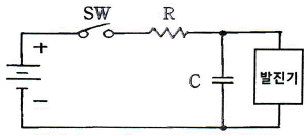
- R 증가, C 감소
- R 감소, C 증가
- R과 C의 감소
- R과 C의 증가
(정답률: 70%)
62. 계측용 발진기의 필요조건으로 적합하지 않은 것은?
- 출력 임피던스가 가능한 클 것
- 출력 파형의 왜율이 적을 것
- 발진 주파수를 연속적으로 가변할 수 있을 것
- 출력 전압은 안정되고 직독할 수 있을 것
(정답률: 66%)
63. 다음 중 LC 회로의 공진시 공진 주파수는?
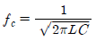
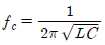
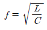
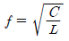
(정답률: 71%)
64. 다음 그림과 같은 저역필터의 차단주파수(fc)는?
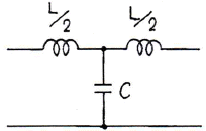
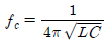
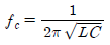
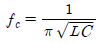
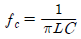
(정답률: 51%)
65. 홀 계수 0.04m3/C, 두께 0.5 mm인 홀 발전기를 0.5 WB/m2인 자속밀도(B) 속에 수직으로 놓고 전류 단자에 1mA를 흘린 경우에 얻어지는 기전력은 몇 mV 인가?
- 10
- 20
- 40
- 80
(정답률: 47%)
66. 오실로스코프에서 화면의 수직축 눈금 1개에 해당하는 크기 값을 변경하고자 할 때 사용하는 것은?
- TIME/DIV
- VOLTS/DIV
- POSITION
- TRIG MODE
(정답률: 78%)
67. 최대 눈금 50mV, 내부 저항 10Ω의 직류 전압계에 배율기를 사용하여 3V의 전압을 측정하려면 배율기의 저항은 몇 Ω 인가?
- 500
- 590
- 600
- 690
(정답률: 73%)
68. 정현파의 각속도 ω=200[rad/sec]로 주어질 때, 주기는?
- 100π
- 10π
(정답률: 68%)
69. 디지털 계수형 주파수계의 구성과 관계가 있는 것은?
- 변조기
- 검파기
- 게이트 회로
- CRT
(정답률: 64%)
70. 측정기로 미지량을 측정하는 경우에 어느 정도 미세하게 식별할 수 있는지를 나타내는 것은?
- 확도
- 정도
- 편차
- 감도
(정답률: 60%)
71. 다음 중 저항 온도 특성을 이용한 고주파 전력계로 옳은 것은?
- 딥미터
- 볼로미터
- 김쇄기
- 멀티미터기
(정답률: 76%)
72. 오실로스코프의 수평 편향 시스템의 기본 구성에 속하지 않는 것은?
- 트리거 회로
- 수평 증폭기
- 스위프 발진기
- 이상 신호 발생기
(정답률: 66%)
73. 오실로스코프 상에서 그림과 같은 도형을 얻었다. c=0.5 이고, d=1 이라면 위상차(θ)는?
- θ=0°
- θ=30°
- θ=90°
- θ=150°
(정답률: 73%)
74. 측정기기의 제어장치는 제어 토크의 종류에 따라 분류할 수 있다. 다음 중 제어장치의 종류가 아닌것은?
- 스프링 제어
- 공기 제어
- 전기적 제어
- 자기적 제어
(정답률: 59%)
75. 표준 커패시터로 미지의 인덕턴스를 측정하는 브리지로서 외부 전자계의 영향이 적고 회로 크기가 작은 회로는?
- 윈 브리지 회로
- 맥스웰 브리지 회로
- 공진 브리지 회로
- 캠벨 브리지 회로
(정답률: 58%)
76. 어떤 전원장치의 무부하시 전압이 220V였는데 정격부하시 전압이 180V가 되었다. 측정된 전압 변동률(%)은?
- 22.2
- 18.6
- 16.6
- 11.2
(정답률: 73%)
77. 정전용량, 저주파 주파수 측정 등에 사용되는 브리지는?
- 윈 브리지
- 캠벨 브리지
- 셰링 브리지
- 코올라시 브리지
(정답률: 63%)
78. 대표적인 파형 측정기로서 신호의 주파수와 전압의 크기, 감쇠량, 변조지수, 점유 대역폭, 변조 신호 주파수 등을 측정하고 신호의 왜곡 측정, 잡음 등을 분석할 수 있는 계기는?
- 오실로스코프
- 디지털 전력량계
- 스펙트럼 분석기
- 주파수 카운터
(정답률: 61%)
79. 피측정 주파수를 계수형 주파수계로 측정한 결과 1초에 반복한 횟수가 60번 이었다. 피측정 주파수는?
- 1Hz
- 60Hz
- 360Hz
(정답률: 79%)
80. 다음의 지침형 주파수계에서 주파수(f)는 몇 kHz 인가?(단, V = 5V, C = 250nF, I = 2.5mA이다.)
- 0.2
- 1
- 2
- 10
(정답률: 45%)